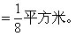

第十二讲 抽屉原理的一般表述
我们知道，把3个苹果随意放进两个抽屉里，至少有一个抽屉里有两上或两个以上的苹果.如果把5个苹果放进两个抽屉里，上述结果当然还能成立.能不能有更强一点的结果呢？我们发现把5个苹果往两个抽屉里放，即使每个抽屉都放2个还剩1个苹果，这个苹果无论放到哪个抽屉里都会出现有一个抽屉里有3个苹果.同样，如果苹果个数变为7个，那么就可以保证有一个抽屉里至少有4个苹果了。
这里有什么规律呢？
先将苹果平均分到各个抽屉里，如果至少还余1个苹果，那么多余的苹果无论再放入哪个抽屉中都可以保证至少有一个抽屉里有（商+1）个（或更多的）苹果。
这样，可得到下述加强的抽屉原理：
把多于m×n个苹果随意放进n个抽屉里，那么至少有一个抽屉里有（m+1）个或（m＋1）个以上的苹果。
例1 ①求证：任意25个人中，至少有3个人的属相相同.②要想保证至少有5个人的属相相同，但不能保证有6个人属相相同，那么人的总数应在什么范围内？
分析与解答 ①把12种属相看作12个抽屉。
因为25÷12=2…1，
所以，根据抽屉原理，至少有3个人的属相相同。
②要保证有5个人的属相相同，总人数最少为：
4×12+1=49（人）。
不能保证有6个人属相相同的最多人数为：
5×12=60（人）。
所以，总人数应在49人到60人的范围内。
例2 放体育用品的仓库里有许多足球、排球和篮球.有66名同学来仓库拿球，要求每人至少拿1个球，至多拿2个球.问：至少有多少名同学所拿的球种类是完全一样的？
分析与解答 拿球的配组方式有以下9种：
｛足｝，｛排｝，｛篮｝，｛足，足｝，｛排，排｝，｛篮，篮｝，｛足，排｝，｛足，篮｝，｛排，篮｝。
把这9种配组方式看作9个抽屉。
因为66÷9=7…3，
所以至少有7＋1＝8（名）同学所拿的球的种类是完全一样的。
例3 一副扑克牌，共54张，问：至少从中摸出多少张牌才能保证①至少有5张牌的花色相同；②四种花色的牌都有；③至少有3张牌是红桃。
分析与解答 一副扑克牌有四种花色，每种花色各13张，另外还有两张王牌。
①为了“保证”5张牌花色相同，我们应从最“坏”的情况去分析，即先摸出了两张王牌.把四种花色看作4个抽屉，要想有5张牌属于同一抽屉，只需再摸出4×4+1＝17（张），也就是共摸出19张牌.即至少摸出19张牌，才能保证其中有5张牌的花色相同。
②因为每种花色有13张牌.若考虑最“坏”的情况，即摸出了2张王牌和三种花色的所有牌共计13×3＋2=41（张），这时，只需再摸一张即一共42张牌，就保证四种花色的牌都有了.即至少摸出42张牌才能保证四种花色的牌都有。
③最坏的情形是先摸出了2张王牌和方块、黑桃、梅花三种花色所有牌共计41张，只剩红桃牌.这时只需再摸3张，就保证有3张牌是红桃了.即至少摸出44张牌，才能保证其中至少有3张红桃牌。
例4 平面上给定17个点，如果任意三个点中总有两个点之间的距离小于1，证明：在这17个点中必有9个点可以落在同一半径为1的圆内。
分析与解答 如果17个点中，任意两点之间的距离都小于1，那么，以这17个点中任意一点为圆心，以1为半径作一个圆，这17个点必然全落在这个圆内.如果这17个点中，有两点之间距离不小于1（即大于1或等于
1），设这两点为O1、O2，分别以O1、O2为圆心，1为半径作两个圆（如图）.把这两个圆看作两个抽屉，由于任意三点中总有两个点之间的距离小于1，因此其他15个点中的每一点，到O1、O2的距离必有一个小于1.也就是说这些点必落在某一个圆中.根据抽屉原理必有一个圆至少包含这15个点中的8个点.由于圆心是17个点中的一点，因此这个圆至少包含17个点中的9个点.
例5 把1、2、3、…、10这十个数按任意顺序排成一圈，求证在这一圈数中一定有相邻的三个数之和不小于17。
分析与解答 把这一圈从某一个数开始按顺时针方向分别记为a1、a2、a3、…、a10（见图）.相邻的三个数为一组，有a1a2a3、a2a3a4、a3a4a5、…、a9a10d1、a10a1a2共10组。
这十组数的和的总和为
（a1＋a2+a3）＋（a2+a3+a4）＋…+（a10+a1＋a2）
＝3（a1+a2+a3＋…+a10）
＝3×55=165＝16×10＋5。
根据抽屉原理这十组数中至少有一组数的和不小于17。
这道题还可以用下面的方法证明：
在10个数中一定有一个数是1，设a10＝1，除去a10之外，把a1、a2、…、a9这9个数按顺序分为三组a1a2a3、a4a5a6、a7a8a9.下面证明这三组中至少有一组数之和不小于17。
因为这三组数之和的总和为
（a1+a2+a3）＋（a4+a5+a6）+（a7+a8＋a9）
＝a1+a2+…+a9
＝2+3+…＋10
＝54＝3×16+6。
根据抽屉原理这三组数中至少有一组数之和不小于17。
第二种证法中去掉了最小数1，其实若去掉2、3、4也可以的，因为54=3×17＋3，所以用第二种证法还可以得出至少有一组数的和不小于18的结论，而第一种证法却不能得出这个结论。
此外，由于54=3×18，因此即使第二种证法也不能由抽屉原理得出三组数中至少有一组数的和不小于19的结论.事实上，如右图中所示，划了线的三组数的和都是18（并且其他任何三个相邻数之和都小于18）。
例6 在边长为3米的正方形内，任意放入28个点，求证：必有4个点，以它们为顶点的四边形的面积不超过1平方米。分析与解答根据题目的结论，考虑把这个大正方形分割成面积为1平方米的9个小正方形（如右图）。
因为28＝3×9+1，
所以根据抽屉原理，至少有4个点落在同一个边长为1米的小正方形内（或边上）
（图），这4个点所连成的四边形的面积总小于或等于小正方形的面积，即以这4个点为顶点的四边形的面积不超过1平方米。例7在边长为1米的正方形内，任意放入9个点.求证：至少有3个点，以这三个点为顶点的三角形
分析与解答
把边长为1米的正方形取各边的中点，把对边中点相连
个抽屉，把9个点随意放入4个抽屉.根据抽屉原理，有一个抽屉中至少有3

点为顶点的三角形的面积不大于小正方形面积的一半.设A、B、C三点在同一个小正方形内.如果△ABC中的某一条边BC与小正方形的边平行（如图），则
与小正方形的边不平行（如图）.则可过其中一点B作BD与小正方形边平行，它将△ABC分成两个三角形：△ABD与△BCD.则

平方米。